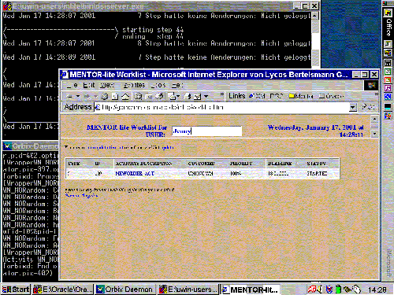

| Next Step |
Jenny's Worklist
After arriving in her office in the early morning, our first user Jenny logs in at her workstation and gets a list of work to do, her "worklist".
 |
| (click on figure to enlarge) |

The worklist consits of work items which have been automatically assigned to the user according to a "worklist strategy" with respect to the user's skills and availability.
Each row in the worklist, i.e., each work item, has 7 columns:
- TYPE and ID refer to workflow type and id, which form the unique identification of a workflow instance.
- ACTIVITY DESCRIPTION, CUSTOMER, PRIORITY, and DEADLINE are self-explanatory
- STATUS contains one of 3 possible values:
- "started" when the activity is running.
- "suspended" when the user has suspended the actvity processing for some reason and will continue later.
- "completed" when the user has completed the activity processing.
Just like the other interactive clients in Mentor-lite the worklist client is implemented using DHTML and XML/XSL technologies. No software other than a web browser is needed. The worklist obtains the input data along with the corresponding XML schema from the web-based XML mediator. The XML schema provides the meta-information regarding the structure of the document and the primitive types used in particular XML elements and attributes. XML schemas allow appropriate data processing (sorting, aggregation functions etc.) without involving the web server. In particular the user can reorder worklist items by clicking on the table header that she wants the worklist to be sorted on.
In the background of the figure we see two open windows that show what is going on "under the hood" in the underlying execution engines.
The upper window is the running workflow engine. Here, we are able to follow the execution of the current workflow instance.
The lower window is the Orbix daemon running on this machine. Orbix is a CORBA-compliant request broker by Iona.
We will focus on these windows later.
Using XML allows us to define multiple views for the same data. The user gets a closer view on the work item by clicking on the activity description - in this case it is NEWORDER_ACT ...
| Next Step |